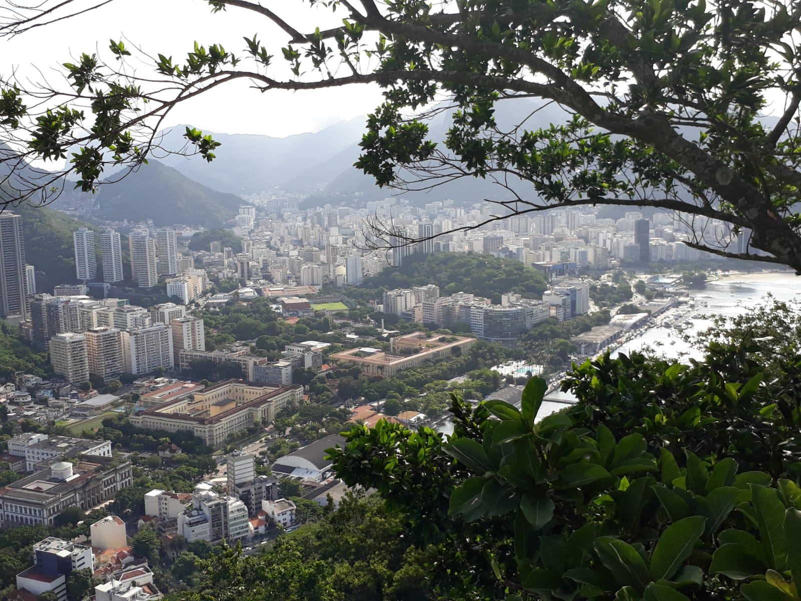

Brazil
Brazil is a country that has marked me a lot. Traveling there from Morocco, where I come from, was a great adventure for me. Brazil is another world, ten hours flight from my city. A world of sunshine, joy, parties, colors... but also so much poverty, suffering and insecurity. I have never seen so many police and military in a city without having a war. And yet this country is full of a thousand wonders through its nature, landscapes, waterfalls, culture, music, dances... Such a rich country!
Rio de Janeiro is the first city you think of when talking about Brazil. A city that lives to the rhythm of music and soccer. The Carnival of Rio is not famous for nothing... You can savor delicious typical dishes such as farofa or churrasco. If you go there, do not mess to go to Christ the Redeemer, Sugar Loaf Mountain,Selarón Steps and Copacabana beach. If you like advanture you can try ocinha Favela, but be aware. You need a guide to go there, it is one of the most dangerious Favelas de Rio De janeiro, it summarizes the level of poverty and the gap difference between the poor and rich in Brazil.
Olinda, less known than Rio de Janeiro or Sao Polo is yet to be discovered. This colorful city is located 6 km from Recife, built on a hill. You can visit many museums, art galleries and especially colonial buildings. All these marvels are classified UNESCO.

Iguazu and its vertiginous falls! what a beautiful landscape! In reality, they consist of 275 waterfalls and are carried to the border between the Brazil and Argentina. Brazil has created a national park there. So I was able to enjoy different points of view on these monumental waterfalls which are now part of the 7 wonders of the world. When you see them, you understand why! The deafening noise the waterfall is impressive. The falls are accompanied by vegetation lush that creates a tropical atmosphere. Forest walks are inevitable. It's a real immersion. I also met many incredible animals: multicolored butterflies, tapirs, howler monkeys, exotic birds, and many animals that I have never new they exist in my life...An extraordinary fauna and flora that will remain etched in my memory!
Ouro preto is a little-known but very pretty village to visit! At the time of the gold rush, Ouro preto was an obligatory crossing point. It is in a hilly place, not to say mountainous. So you need good shoes to stroll there. I was able to discover magnificent churches covered with gold, containing true works of art. I saw beautiful waterfalls there, even if, they will never be able dethrone iguazu falls!